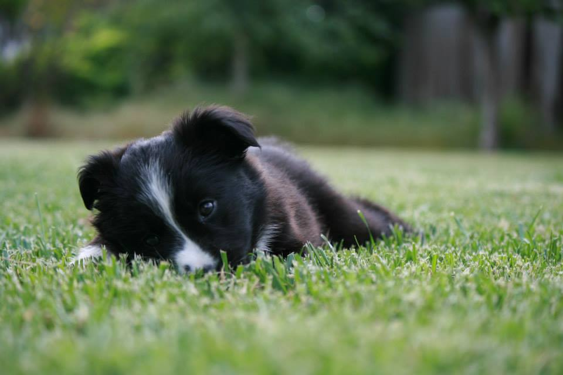

My name is Julianne, I grew up in a small town in Central California. Both of my parents still live there, as well as my dog, Minnie!

I moved to New Zealand for University, where I studied Earth Science at the Univeristy of Auckland. I chose to study this because I really enjoyed learning about our planet and its history.
While I was studying I joined a satellite building team called Koios. We are building a 10 x 10 x 10 centimeter satellite called a Cubesat. This was throught the Auckland Programme for Space Systems.
This is when I really became interested in technology and decided that for my career I wanted to be more tech-focused.
This is what brough me to Dev Acacdemy! Dev Academy is a 15 week web developer bootcamp. I joined shortly after I finished my bachelors degree.
So now I currently live in Auckland, New Zealand and am studying to become a web developer!
Check out what I've learned so far by looking at my blogs!